75:00
Winter
10M WON


SUPER SPEEDRUN MARATHON
슈퍼 스피드런 마라톤
SUPER SPEEDRUN MARATHON (슈퍼 스피드런 마라톤)은 3~4일간 밤새도록 진행되는 스피드런 자선 행사입니다.
스피드런이란 게임을 처음부터 플레이해서 얼마나 빨리 클리어할 수 있을까를 겨루는 플레이 방식입니다. SSM는 그런 스피드런을 하는 사람들이 모여 각자 다양한 게임을 플레이하며 그것을 방송하고, 후원금을 모아 기부 단체에 보내는 행사입니다.
2021년부터 매년 개최 중인 슈퍼스피드런은 총 모금액 105,469,000원을 달성하였습니다.
모금한 금액은 전액 메이크어위시코리아로 전달되었습니다.

슈퍼 스피드런의 목표
SUPER SPEEDRUN MARATHON은 스피드런의 발전과 촉진을 도모하기 위해 개최합니다. 또한 행사 기간 중에는 후원금을 모아 전액 기부단체로 전달합니다. SSM은 중간중간에 게임뿐만이 아닌 게임과 관련된 각종 문화 콘텐츠를 준비하여 다양한 방면으로 즐길 수 있는 행사를 만들고자 합니다.
SSM에서 모금된 모든 금액은 난치병으로 투병하는 아동들에게 소원 성취를 통해 삶의 희망, 용기, 기쁨을 전함으로 병과 싸워 이겨내는 기적을 만드는 "한국메이크어위시재단"에 전액 기부됩니다.
기부 단체
SSM 기간 중에 진행 되는 후원금은 전액 메이크어위시 코리아로 돌아갑니다.
메이크어위시는 난치병으로 투병하는 아동들에게 소원 성취를 통해 삶의 희망, 용기, 기쁨을 전함으로 병과 싸워 이겨내는 기적을 만드는 단체입니다. 메이크어위시는 1980년 미국 애리조나 주에서 백혈병으로 투병하던 일곱 살 크리스의 소원 성취를 계기로 탄생하여 전 세계 50개 국 39개 지부에서 50만 명 이상의 난치병 아동들의 소원을 이루어주는 세계 최대 소원 성취 전문기관이 되었습니다. 메이크어위시 코리아는 2002년 11월 세계에서 26번째로 설립되어 현재까지 5,000여 명의 난치병 아동들의 소원을 이루어 주었으며, 더 많은 난치병 아동들이 소원을 이룰 수 있도록 노력하고 있습니다.
다만, 치지직 채널 구독 및 슈퍼스피드런'마라톤'이 아닌 다른 행사 중에 이루어지는 후원은 행사 운영 비용에 사용됩니다. 자세한 정보는 공식 디스코드 채널에서 확인해주세요.
방송 및 기록
행사는 모든 내용을 Youtube로 언제든지 다시 시청할 수 있습니다. 행사가 완전히 끝나면 추후 게임 별로 다시보기가 업로드됩니다.